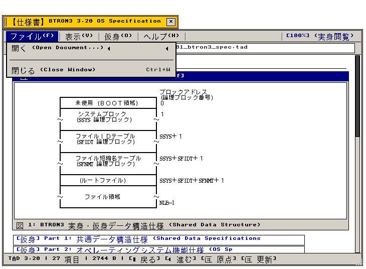
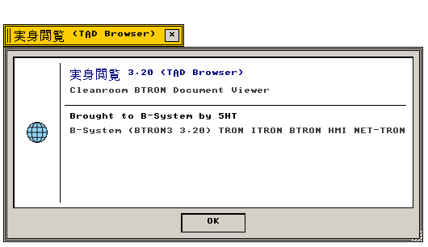

ブラウザ (Browser)
TADハイパーテキスト閲覧 · 履歴スタック · 図形描画 · リンク解決
BTRON3 仕様準拠 TAD ハイパーテキスト・電子ブックドキュメントブラウザ
"Native hypermedia TAD document reader supporting fusen navigation, vector graphics, and history stacks."
← アプリケーション一覧 (Applications Index)
ブラウザ（Browser） — ブラウザ（Browser）は、B-SystemのOS仕様書や電子書籍などのTADドキュメントを閲覧・探索する標準ハイパーテキストリーダーです。
"Document viewer rendering native TAD binary fusen records, embedded PNG/GIF figures, and interactive link graphs."
画面プレビュー (Screen Preview)

実機描画フレームバッファより自動抽出された仕様書閲覧 TAD Browser (ファイルメニュー展開・仕様書TAD文書表示)

実機描画フレームバッファより自動抽出された透過バージョン情報ダイアログ (About TAD Browser)
概要 (Overview)
ブラウザ（Browser）は、B-SystemのOS仕様書や電子書籍などのTADドキュメントを閲覧・探索する標準ハイパーテキストリーダーです。
"Document viewer rendering native TAD binary fusen records, embedded PNG/GIF figures, and interactive link graphs."
1. メニュー構造と操作体系 (Menu Architecture & Operations)
Browser が提供する標準メニューバー構造および操作体系の仕様。
"Standard menu bar hierarchy and interactive command bindings."
| メニュー項目 |
機能説明 (Functional Description) |
技術仕様・C99実装 (C99 Architecture) |
| ファイル (File) |
ドキュメントを開く、リロード、TADファイル情報、閉じる |
src/apps/tad_browser.c |
| 移動 (Go) |
戻る（Back）、進む（Forward）、ホーム、履歴一覧 |
history_stack[] 探索 |
| 表示 (View) |
等倍表示、文字拡大/縮小、折り返し幅自動調整 |
マルチ言語ラインリフロー |
| ヘルプ (Help) |
バージョン情報（Nano About Box 420×170px） |
app_menu_create_about_dialog |
2. 機能仕様とアーキテクチャ (Functional & Architecture Specifications)
Browser アプリケーションの内部構造、データモデル、およびシステムコール仕様。
"Internal architectural components, memory models, and system call bindings."
| コンポーネント・機能名 |
動作概要と機能仕様 (Functional Specification) |
技術仕様・C99構造体 (C99 Implementation) |
| 履歴スタックナビゲーション |
ブラウジング履歴を完全管理。戻る・進むボタンおよびAlt+Left/Rightによる高速ページ遷移。 |
history_idx スタックポインタ |
| インライン図形レンダリング |
GIF/PNGラスター画像およびTADベクトル図形プリミティブ（TS_FPRIM）の高速デコード描画。 |
src/graphics/gif_dec.c |
| 多言語自動リフロー |
日本語、英語、ウクライナ語キリル文字の動的テキスト折り返しとビューポート再計算。 |
tad_browser_paint リフロー |
| 不変ドキュメント分離 |
複数ウィンドウ間でドキュメントコンテキストを完全分離（メモリ独立性保証）。 |
SPEC 3.20 準拠 |
関連コンポーネント (Related Components)